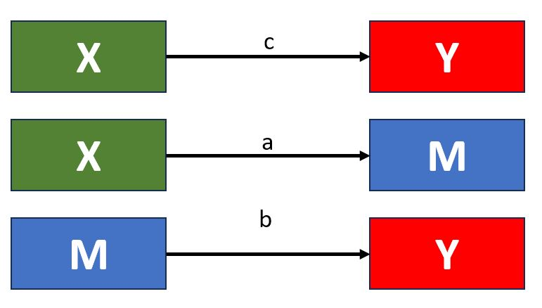

2024-01-27
So far we have discussed linear models where a variable Y regresses on X
\[ y = b_0 +b_1x_1 + ε \]
Or, variable Y regresses on more than one variables, X1, X2, …
\[ y = b_0 +b_1x_1 + b_2x_2 + ε_1 \]
These models allowed us to test hypotheses where exogenous observed variables X1, X2, … would have an effect on an endogenous observed variable Y However, in this approach we did examine the impact of X1 on X2, and consequently the impact of X2 on Y.
Today we will introduce a new concept where two predicting variables X and M predict an endogenous observed variable Y.
Furthermore, variable X also influences variable M. We will be referring to variable M as our Mediator.
It is also worth noting here that different sources and approaches are even stricter on the above by also requesting that these relations are causal.
In other words, X causally influences M and Y, and M causally influences Y.

X should significantly predict Y (path c, although some authors argue this is not required)
X must significantly predict M (path a)
M must significantly predict Y (path b)
First we will create some random data. As we mentioned last week, in this module we will be working exclusively with randomly generated data. Please note that will be required to generate random data for your assignments too.
Call:
lm(formula = Y ~ X, data = df)
Residuals:
Min 1Q Median 3Q Max
-2.5268 -0.7677 -0.0760 0.7206 3.5104
Coefficients:
Estimate Std. Error t value Pr(>|t|)
(Intercept) 0.03976 0.06851 0.580 0.5622
X 0.16775 0.07119 2.356 0.0192 *
---
Signif. codes: 0 '***' 0.001 '**' 0.01 '*' 0.05 '.' 0.1 ' ' 1
Residual standard error: 1.083 on 248 degrees of freedom
Multiple R-squared: 0.0219, Adjusted R-squared: 0.01796
F-statistic: 5.553 on 1 and 248 DF, p-value: 0.01923
Call:
lm(formula = M ~ X, data = df)
Residuals:
Min 1Q Median 3Q Max
-2.1693 -0.7082 0.0269 0.6571 3.2536
Coefficients:
Estimate Std. Error t value Pr(>|t|)
(Intercept) -0.00179 0.06358 -0.028 0.978
X 0.61127 0.06606 9.253 <2e-16 ***
---
Signif. codes: 0 '***' 0.001 '**' 0.01 '*' 0.05 '.' 0.1 ' ' 1
Residual standard error: 1.005 on 248 degrees of freedom
Multiple R-squared: 0.2566, Adjusted R-squared: 0.2536
F-statistic: 85.61 on 1 and 248 DF, p-value: < 2.2e-16
Call:
lm(formula = Y ~ M, data = df)
Residuals:
Min 1Q Median 3Q Max
-2.31772 -0.66815 -0.00959 0.65951 2.66509
Coefficients:
Estimate Std. Error t value Pr(>|t|)
(Intercept) 0.03999 0.06416 0.623 0.534
M 0.35395 0.05525 6.406 7.46e-10 ***
---
Signif. codes: 0 '***' 0.001 '**' 0.01 '*' 0.05 '.' 0.1 ' ' 1
Residual standard error: 1.015 on 248 degrees of freedom
Multiple R-squared: 0.142, Adjusted R-squared: 0.1385
F-statistic: 41.03 on 1 and 248 DF, p-value: 7.458e-10lavaan 0.6.17 ended normally after 1 iteration
Estimator ML
Optimization method NLMINB
Number of model parameters 5
Number of observations 250
Model Test User Model:
Test statistic 0.000
Degrees of freedom 0
Model Test Baseline Model:
Test statistic 113.139
Degrees of freedom 3
P-value 0.000
User Model versus Baseline Model:
Comparative Fit Index (CFI) 1.000
Tucker-Lewis Index (TLI) 1.000
Loglikelihood and Information Criteria:
Loglikelihood user model (H0) -712.004
Loglikelihood unrestricted model (H1) -712.004
Akaike (AIC) 1434.009
Bayesian (BIC) 1451.616
Sample-size adjusted Bayesian (SABIC) 1435.766
Root Mean Square Error of Approximation:
RMSEA 0.000
90 Percent confidence interval - lower 0.000
90 Percent confidence interval - upper 0.000
P-value H_0: RMSEA <= 0.050 NA
P-value H_0: RMSEA >= 0.080 NA
Standardized Root Mean Square Residual:
SRMR 0.000
Parameter Estimates:
Standard errors Bootstrap
Number of requested bootstrap draws 1000
Number of successful bootstrap draws 1000
Regressions:
Estimate Std.Err z-value P(>|z|) ci.lower ci.upper
Y ~
X (c) -0.065 0.086 -0.762 0.446 -0.241 0.097
M ~
X (a) 0.611 0.066 9.219 0.000 0.475 0.737
Y ~
M (b) 0.381 0.068 5.604 0.000 0.248 0.517
Std.lv Std.all
-0.065 -0.058
0.611 0.507
0.381 0.406
Variances:
Estimate Std.Err z-value P(>|z|) ci.lower ci.upper
.Y 1.018 0.086 11.783 0.000 0.839 1.185
.M 1.002 0.083 12.063 0.000 0.843 1.175
Std.lv Std.all
1.018 0.856
1.002 0.743
R-Square:
Estimate
Y 0.144
M 0.257
Defined Parameters:
Estimate Std.Err z-value P(>|z|) ci.lower ci.upper
ab 0.233 0.053 4.365 0.000 0.135 0.347
total 0.168 0.074 2.259 0.024 0.025 0.306
Std.lv Std.all
0.233 0.206
0.168 0.148 lhs op rhs label est se z pvalue ci.lower ci.upper
1 Y ~ X c -0.065 0.086 -0.762 0.446 -0.241 0.097
2 M ~ X a 0.611 0.066 9.219 0.000 0.475 0.737
3 Y ~ M b 0.381 0.068 5.604 0.000 0.248 0.517
4 Y ~~ Y 1.018 0.086 11.783 0.000 0.839 1.185
5 M ~~ M 1.002 0.083 12.063 0.000 0.843 1.175
6 X ~~ X 0.926 0.000 NA NA 0.926 0.926
7 ab := a*b ab 0.233 0.053 4.365 0.000 0.135 0.347
8 total := c+(a*b) total 0.168 0.074 2.259 0.024 0.025 0.306 lhs op rhs label est.std se z pvalue ci.lower ci.upper
1 Y ~ X c -0.058 0.076 -0.760 0.447 -0.207 0.091
2 M ~ X a 0.507 0.043 11.678 0.000 0.422 0.592
3 Y ~ M b 0.406 0.074 5.497 0.000 0.261 0.551
4 Y ~~ Y 0.856 0.046 18.675 0.000 0.766 0.945
5 M ~~ M 0.743 0.044 16.914 0.000 0.657 0.830
6 X ~~ X 1.000 0.000 NA NA 1.000 1.000
7 ab := a*b ab 0.206 0.045 4.573 0.000 0.118 0.294
8 total := c+(a*b) total 0.148 0.064 2.315 0.021 0.023 0.273We see that the paths a and b are significant. The same cannot be said for the path c. We also have a significant indirect effect and a significant total effect.
In this case our direct path c is no longer significant, hence this is a case of full mediation
If both the indirect path ab and the direct path c were significant this would have been a case of partial mediation.
If the indirect path was non-significant this would have been a case of no mediation.
Note that the following is just a guideline and was written based on the standardized estimates.
‘Initial analysis indicated that X significantly predicted M and Y, and M significantly predicted Y. However, when M was incorporated as a mediator in the X and Y relationship a full mediation occurred where the indirect effect was significant (b = 0.23, p < .001, z = 4.57, se = 0.21, ci[0.95] = (0.12 - 0.29), the total effect was also significant (b = 0.17, p < .021, z= 2.32, se = 0.06, ci(0.95) = [0.02 - 0.27]. The direct path of X predicting y was no longer significant (b = 0.06, p = .447, z= -0.76, se = 0.08, ci(0.95) = [-0.21 - 0.09]. Both paths a (X->M) and b (M->Y) were significant, (b = 0.51, p < .001, z = 11.68, se = 0.04, ci[0.95] = (0.42 - 0.59) and (b = 0.41, p < .001, z = 5.50, se = 0.07, ci[0.95] = (0.26 - 0.55) respectively. This was in line with our hypothesis that the relationship between X and Y can be entirely explained by changes in M.’
Please log on to your Posit account and access the Week2 project where you can work on an example of serial mediation with 2 mediators.
set.seed(13548) #note that we set the seed to a specific value
X <- rnorm(250) #number of observations
M1 <- 0.60*X + rnorm(250)# what does the 0.4 and rnorm represent here?
M2 <- 0.50*X + rnorm(250)
Y <- 0.35*M + rnorm(250) # what does the 0.6 and rnorm represent here?
df <- data.frame(X=X, Y=Y, M1=M1, M2=M2)library(lavaan)
library(semPlot)
model2_med <- '
# alternative syntax of the model
Y ~ c*X + b1*M1 + b2*M2
M1 ~ a1*X
M2 ~ a2*X
# indirect effects (a*b)
a1b1 := a1*b1
a2b2 := a2*b2
# total effect
total := c + (a1*b1) + (a2*b2)
'
model2_med_fit <- sem(model2_med, data = df, se = 'bootstrap', bootstrap = 1000)lavaan 0.6.17 ended normally after 1 iteration
Estimator ML
Optimization method NLMINB
Number of model parameters 8
Number of observations 250
Model Test User Model:
Test statistic 0.243
Degrees of freedom 1
P-value (Chi-square) 0.622
Model Test Baseline Model:
Test statistic 140.934
Degrees of freedom 6
P-value 0.000
User Model versus Baseline Model:
Comparative Fit Index (CFI) 1.000
Tucker-Lewis Index (TLI) 1.034
Loglikelihood and Information Criteria:
Loglikelihood user model (H0) -1076.137
Loglikelihood unrestricted model (H1) -1076.016
Akaike (AIC) 2168.275
Bayesian (BIC) 2196.446
Sample-size adjusted Bayesian (SABIC) 2171.086
Root Mean Square Error of Approximation:
RMSEA 0.000
90 Percent confidence interval - lower 0.000
90 Percent confidence interval - upper 0.132
P-value H_0: RMSEA <= 0.050 0.717
P-value H_0: RMSEA >= 0.080 0.181
Standardized Root Mean Square Residual:
SRMR 0.008
Parameter Estimates:
Standard errors Bootstrap
Number of requested bootstrap draws 1000
Number of successful bootstrap draws 1000
Regressions:
Estimate Std.Err z-value P(>|z|) ci.lower ci.upper
Y ~
X (c) 0.003 0.090 0.035 0.972 -0.174 0.172
M1 (b1) 0.279 0.069 4.019 0.000 0.143 0.414
M2 (b2) 0.008 0.062 0.121 0.904 -0.113 0.132
M1 ~
X (a1) 0.611 0.063 9.718 0.000 0.477 0.731
M2 ~
X (a2) 0.454 0.067 6.736 0.000 0.320 0.593
Std.lv Std.all
0.003 0.003
0.279 0.297
0.008 0.008
0.611 0.507
0.454 0.397
Variances:
Estimate Std.Err z-value P(>|z|) ci.lower ci.upper
.Y 1.077 0.093 11.551 0.000 0.885 1.248
.M1 1.002 0.083 12.104 0.000 0.831 1.156
.M2 1.019 0.086 11.887 0.000 0.852 1.184
Std.lv Std.all
1.077 0.910
1.002 0.743
1.019 0.842
R-Square:
Estimate
Y 0.090
M1 0.257
M2 0.158
Defined Parameters:
Estimate Std.Err z-value P(>|z|) ci.lower ci.upper
a1b1 0.170 0.045 3.815 0.000 0.086 0.259
a2b2 0.003 0.029 0.119 0.905 -0.052 0.062
total 0.177 0.079 2.227 0.026 0.011 0.336
Std.lv Std.all
0.170 0.151
0.003 0.003
0.177 0.156 lhs op rhs label est se z pvalue ci.lower ci.upper
1 Y ~ X c -0.065 0.086 -0.762 0.446 -0.241 0.097
2 M ~ X a 0.611 0.066 9.219 0.000 0.475 0.737
3 Y ~ M b 0.381 0.068 5.604 0.000 0.248 0.517
4 Y ~~ Y 1.018 0.086 11.783 0.000 0.839 1.185
5 M ~~ M 1.002 0.083 12.063 0.000 0.843 1.175
6 X ~~ X 0.926 0.000 NA NA 0.926 0.926
7 ab := a*b ab 0.233 0.053 4.365 0.000 0.135 0.347
8 total := c+(a*b) total 0.168 0.074 2.259 0.024 0.025 0.306This Friday we are having our first Zoom session at 12 noon.
There we will be chatting about questions you might have but I also want you to explore 2 questions.